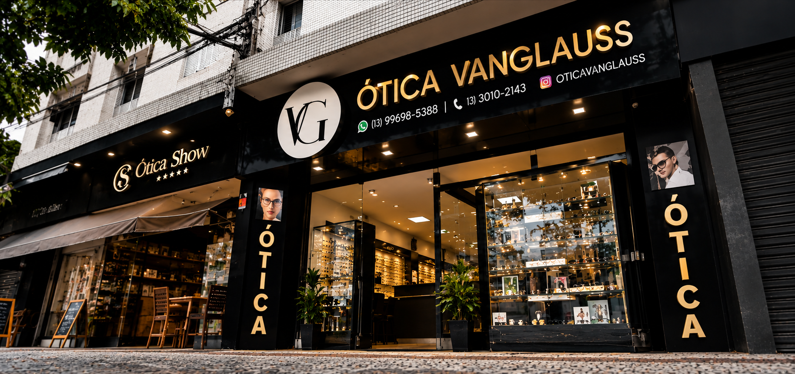
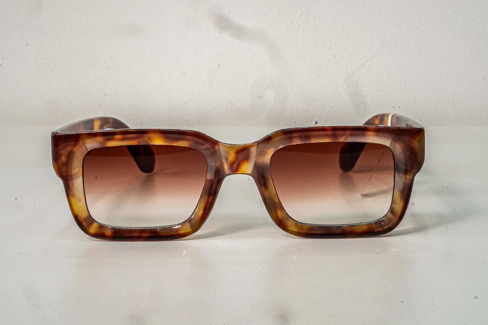

Lentes
Opções para sua rotina e para a sua necessidade visual. Consulte a loja para encontrar a alternativa certa para você.
Lentes, armações e consertos com atendimento também no conforto da sua casa.
Solicitar atendimento
A Vanglauss reúne soluções para diferentes necessidades visuais, com atendimento na loja e a domicílio.
Opções para sua rotina e para a sua necessidade visual. Consulte a loja para encontrar a alternativa certa para você.
Modelos de óculos de grau e de sol para conhecer, experimentar e escolher com orientação da equipe.
Precisa de um reparo? Entre em contato e explique o que aconteceu para receber orientação sobre o serviço.
A Ótica Vanglauss oferece atendimento no conforto da sua casa. Chame a equipe para conversar sobre o que você procura e combinar os detalhes do atendimento.
Disponibilidade e condições são confirmadas diretamente com a loja.
Conversar pelo WhatsAppAv. General Francisco Glicério, 189
Gonzaga · Santos, SP · 11065-401
Segunda a sexta, das 9h às 18h
Sábado, das 9h às 13h

Ótica Vanglauss · Santos, SPFale com a Ótica Vanglauss e consulte modelos, consertos ou atendimento em casa.